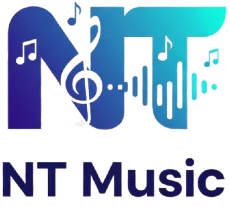

Sube tu link de Spotify o YouTube y nosotros nos encargamos del marketing optimizado para que tu canción llegue más lejos.
La app oficial de NT Music permite a artistas urbanos enviar sus canciones directamente desde YouTube o Spotify para recibir análisis, campañas de marketing y distribución digital. Todo en un solo lugar.
YouTube o Spotify
La app identifica:
Opciones:
El usuario confirma, paga (si aplica) y NT Music ejecuta todo.
Datos claros y fáciles de entender.
Llevamos tu música a todas las plataformas digitales principales
Campañas optimizadas para maximizar el alcance de tus canciones
Construye y fortalece tu presencia en redes sociales
Organizamos y gestionamos todas tus solicitudes de manera profesional
Trabajamos de manera transparente, cuidando tu música y tu carrera con seriedad.
"NT Music transformó mi carrera. Mis canciones ahora llegan a miles de personas que antes no me conocían."
"El marketing profesional de NT Music aumentó mis reproducciones en un 300%. Increíble trabajo."
"Finalmente encontré una plataforma que entiende el negocio de la música urbana. Totalmente recomendado."
NT Music nació para apoyar a los artistas urbanos que no conocen el funcionamiento profesional de las plataformas digitales. Desde nuestros inicios hemos ayudado a talentos a posicionarse y aumentar sus ingresos.
Somos más que una plataforma, somos tu socio estratégico en el crecimiento de tu carrera musical.